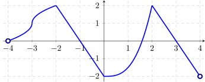

For each of the limits below, give the form of the limit, then evaluate the limit.
- (a)
- \(\displaystyle \lim _{x\to -3} \dfrac {g(x)+\sin \left (\dfrac {\pi }{4}x\right )}{x\sqrt {x+4} }\).
- (b)
- \(\displaystyle \lim _{x\to 0^+} \dfrac {e^x}{\left |g(x)+2\right |}\).
- (c)
- \(\displaystyle \lim _{x\to 3} \dfrac {x^2+2x-15}{x + g(x) - 3}\)